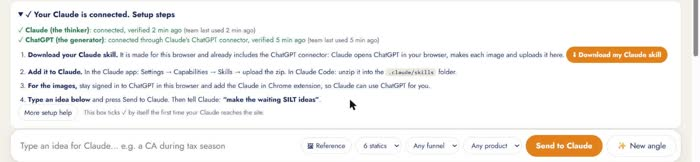
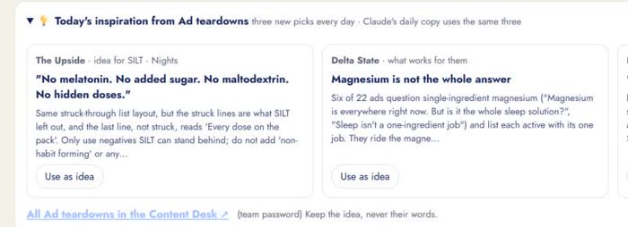
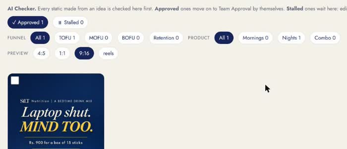
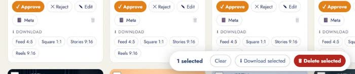
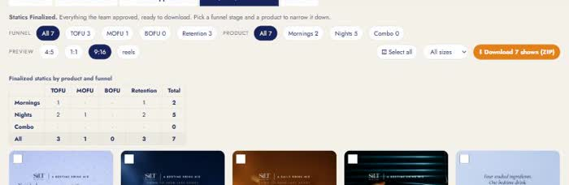
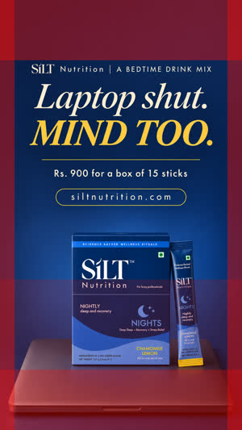

On 1 · Ideas, open Start here and press ⬇ Download my Claude skill. Add the zip in Claude: Settings → Capabilities → Skills. Stay signed in to ChatGPT in the same browser, with the Claude in Chrome extension. The box turns ✓ green by itself.

Type an idea and press Send to Claude, or take one of the three daily picks in 💡 Today's inspiration (from our Ad teardowns) with Use as idea. Then tell Claude:
“make the waiting SILT ideas” · or “make today's SILT daily copy”

Claude writes each creative, ChatGPT makes the images, and the checker tests them against the Rules. ✓ Approved moves on by itself. ⏸ Stalled waits here with the reason: edit it, send it on anyway, or delete it.

✓ Approve, ✕ Reject (give a reason; Claude learns from it), ✎ Edit (cover old words, add new ones), 🗑 delete. Tick the boxes to download or delete several at once.

Everything approved, ready to run. Filter by TOFU / MOFU / BOFU / Retention and Mornings / Nights / Combo. Download each static in all 4 Meta sizes: Feed 4:5, Square 1:1, Stories 9:16, Reels 9:16. Or ZIP what is shown.


Red lines on: no words in the red